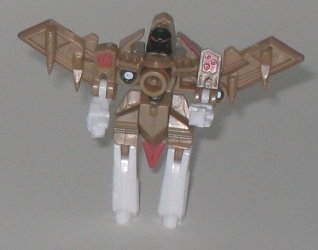

Fireflight
w/ Firebot & Thunderwing
Fireflight
w/ Firebot & Thunderwing
Price
: $10 (U.S.)
Firebot

Allegiance
: Minicon
Size
: Mini-Con
Difficulty of Transformation
: Very
Easy
Color Scheme
: Yellow, dark maroon,
and some light milky gray, charcoal black, metallic dark gunmetal gray,
dark red, bright orange, and silver
Rating
: 6.1
(NOTE: Because this is a repaint, this is
not a full-blown review. This mainly covers any changes made to the mold
and the color scheme, and merely compares it to Armada Firebot. For a review
on the mold itself, read the review of Armada Firebot
here
.)
This version of Firebot,
instead of being mostly light blue or red, is now a rather less appetizing
yellow. Yellow just doesn't look right on an emergency vehicle like this,
especially if it's not a dull color (and this shade certainly isn't). The
dark maroon used on his shoulders in robot mode also doesn't fit in with
the yellow, either, although at least the rest of the colors- such as gray,
read, and silver- fit the overall scheme well. Some of the paint apps in
the vehicle mode- namely, the ones near the rear- are missing on this version,
though at least Firebot seems to have a few more different colors on his
body than his previous versions did. So it's kind of a balancing act- his
robot mode looks a bit more colored and varied than his previous versions,
whereas the vehicle mode looks a little more bland (and bright).
No mold changes have
been made to Firebot. (He and the other Minicon in this 3-pack, Thunderwing,
still can transform into their weapon modes- they're just not pictured
here, both for simplicity's sake and to conserve precious web space.)
Thunderwing

Allegiance:
Minicon
Size
: Mini-Con
Difficulty of Transformation
: Very
Easy
Color Scheme
: White, milky light
brown, dull metallic red, and some black
Rating
: 6.5
(NOTE: Because this is a repaint, this is
not a full-blown review. This mainly covers any changes made to the mold
and the color scheme, and merely compares it to Armada Thunderwing. For
a review on the mold itself, read the review of Armada Thunderwing
here
.)
Universe Thunderwing
is still mostly brown, but it's a decidedly different shade of brown this
time- it's more of a light, "coffee"-like brown. It looks pretty good overall,
and also contrasts nicely with some of Thunderwing's white parts in his
robot mode. However, overall, he's a pretty dull transformer, and here's
why; his color scheme isn't really varied. It's mostly just the three same
colors, with a little bit of black used for the (pretty evil-looking) robot
head. And to be honest, the dull red paint apps aren't really an eyegrabber
against the brown. Plus, some of the paint apps in the vehicle mode- like
the paint that was used on the windows in previous versions- is now gone.
So it leaves him feeling really "blah", especially in vehicle mode.
No mold changes have
been made to Thunderwing.
Fireflight
Allegiance
: Autobot
Size
: Basic
Difficulty of Transformation
: Easy
Color Scheme
: White with a slight
bluish tint, transparent red, dull brownish gray, dull navy blue, and some
silver, metallic bronze, black, and red
Rating:
9.4
(NOTE: Because this is a repaint, this is
not a full-blown review. This mainly covers any changes made to the mold
and the color scheme, and merely compares it to Spy Streak. For a review
on the mold itself, read the review of Spy Streak
here
.)
It seems that every time
they repaint the awesome Spy Streak mold, they improve on the color scheme
just a little more. Which means that Fireflight here is the best out of
the three color schemes this mold has recieved so far. Pretty much the
only beef I have with Fireflight over Spy Streak is that Fireflight's an
Autobot- what IS it about this mold being repainted as an Autobot? He looks
so obviously evil, it just doesn't work that way. So he's a Decepticon
spy in my book. As for the colors, Fireflight's red-and-white scheme is
certainly appropriate in vehicle mode, and the navy blue fits in very well
with it in robot mode as well. (The transparent red plastic looks especially
gorgeous.) I don't normally like the brownish gray color, but for some
inexplicable reason it fits on Fireflight- black, while it normally would
have worked better, just doesn't here. What's really eye-catching about
Fireflight, though, are his AWESOME Energon Radiation patterns. There's
red-and-silver jagged paint apps on the front of his vehicle nosecone and
wings, and geez, I can't keep my eyes off of 'em. Now, Hasbro may want
you to think that these red paint apps are like fire patterns- hence his
name, Fireflight- but in robot mode, the paint apps on his large claw look
so much like blood, I can't even think of them being anything else. So
yeah, Fireflight is a merciless killer. Eeeevil, I'm tellin' ya.
No mold changes have
been made to Fireflight.
The Minicons that come
in this 3-pack aren't quite as good as their mold's previous versions,
but Fireflight himself has one fantastic paint job. That Energon Radiation
really makes this mold shine, and will definitely attract many kids' attention.
A highly recommended buy, especially if you don't have any of the previous
versions of Fireflight's mold.
No Stats
Review by Beastbot
Back to Transformers:
Universe Index